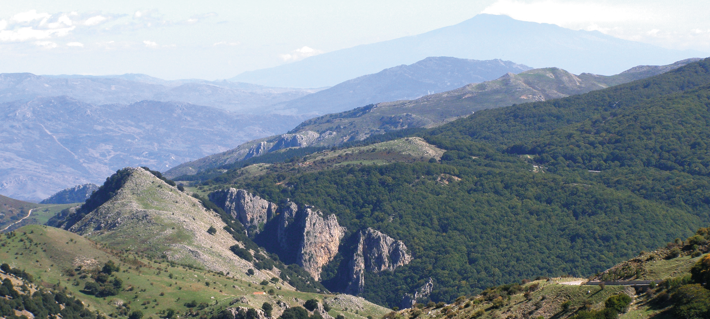

Fosso Canna

ITALIANO - Profonda gola fluviale incisa dal Vallone Canna nelle brecce dolomitizzate e doloruditi della Formazione Quacella, morfologicamente caratterizzate dalla neotettonica madonita. Sulle pareti verticali di circa 100 metri di dislivello, insiste la nidificazione di alcuni esemplari dell’Aquila del Bonelli. (Trias sup. – Giura inf.)
INGLESE - I am Gaetano Ferrarelli